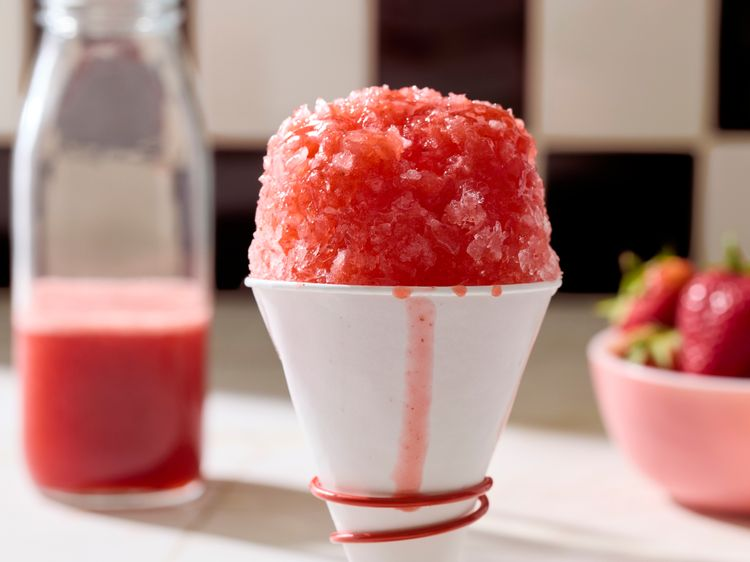

Strawberry Snow Cone
Home

This is a refreshing and delicious treat that's perfect for hot summer days.
It's made with fresh strawberries and a hint of vanilla, creating a delightful flavor that's sure to satisfy your sweet tooth.
Ingredients:
- 2 cups fresh strawberries, hulled and sliced
- 1/4 cup sugar
- 1 teaspoon vanilla extract
- 4 cups ice
- Whipped cream (optional)
Steps:
- In a blender, combine the strawberries, sugar, and vanilla extract. Blend until smooth.
- Fill a glass with ice.
- Pour the strawberry mixture over the ice.
- Top with whipped cream if desired.